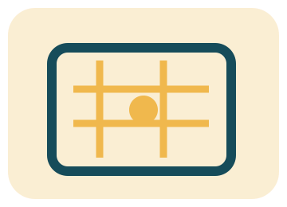

Rubro
Autoservicio según la ficha del proyecto; oferta concreta no comprobada
Propuesta conceptual no oficial — demo privada
Sourigues · Autoservicio (nombre listado en sección alimentación municipal)
Encontrá la ubicación del autoservicio y consultá la información vigente.
Consultar al comercioInformación sujeta a validación del comercio.

Dato disponible · a confirmar
Camino General Belgrano y Av. Milazzo. Dato de listado municipal, sujeto a confirmación.
Sin inventario, marcas, horarios ni servicios verificados.

Orientación propuesta · no es una oferta confirmada
Autoservicio según la ficha del proyecto; oferta concreta no comprobada
Indicá qué categoría buscás y preguntá por disponibilidad; esta demo no contiene inventario.
No hay horario ni stock confirmado: validalos antes de una visita.
Consulta de demostración
Interacción local demostrativa. No ingreses datos personales reales; no se contacta al negocio.
Preguntas frecuentes
No. Es un dato de fuente pública y debe confirmarse antes de publicarlo como vigente.
No se incorporan porque las fuentes disponibles no los verifican.
No. Este formulario es una demostración local sin envío ni almacenamiento.
Secuencia propuesta
Trazabilidad
Dato tomado del listado público consultado el 5 de noviembre de 2026; no certifica vigencia ni titularidad. Propuesta conceptual, no oficial.
Fuente pública (se abre aparte)
La presencia online oficial no fue verificada; eso no afirma que no exista.
Rubro y ubicación sujetos a confirmación. Sin horarios, precios, stock ni contacto externo.
Volver al formulario demo